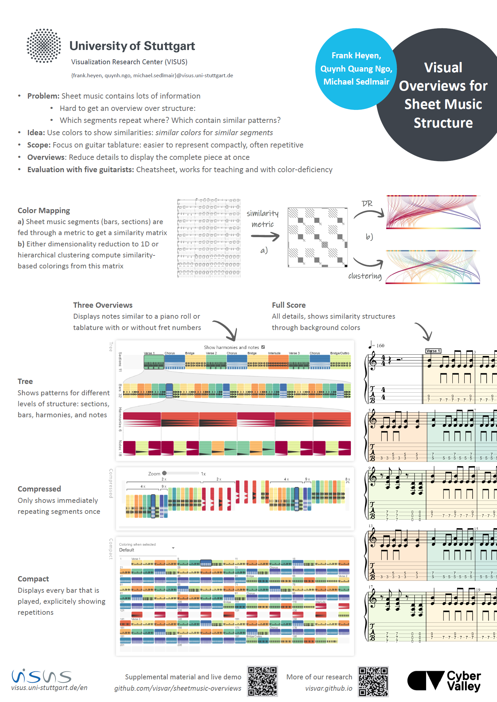

Visual Overviews for Sheet Music Structure

Authors. Frank Heyen, Quynh Quang Ngo, Michael Sedlmair
Venue. ISMIR (2023) Full Paper
Type. Full Paper
Abstract. We propose different methods for alternative represen-
tation and visual augmentation of sheet music that help
users gain an overview of general structure, repeating pat-
terns, and the similarity of segments. To this end, we ex-
plored mapping the overall similarity between sections or
bars to colors. For these mappings, we use dimensionality
reduction or clustering to assign similar segments to simi-
lar colors and vice versa. To provide a better overview, we
further designed simplified music notation representations,
including hierarchical and compressed encodings. These
overviews allow users to display whole pieces more com-
pactly on a single screen without clutter and to find and
navigate to distant segments more quickly. Our prelimi-
nary evaluation with guitarists and tablature shows that our
design supports users in tasks such as analyzing structure,
finding repetitions, and determining the similarity of spe-
cific segments to others